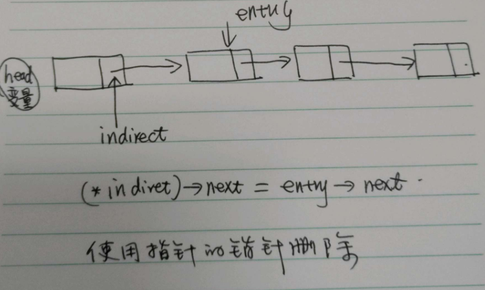

使用 walk 变量循环指向各个链表元素，直至查询到相关节点。同时使用prev保留当前元素的前一个节点。在查找到相关的节点后，使用 prev->next = entry->next, 删除指定节点。
这里有一个特殊情况，head 即是要删除的指定节点，因此需要判断prev是否为空，来处理此情况。 Linux Torvalds 推荐的方法将去除这一特殊处理
void remove_list_entry(entry) {
prev = NULL;
walk = head;
// walk the list to find the entry
while (walk != entry) {
prev = walk;
walk = walk->next;
}
// remove the entry by updating the head or previous entry
if (!prev) {
head = entry->next;
} else {
prev->next = entry->next;
}
}
indirect 指针指向的是 next 指针的地址，对于head节点来说，指向的是 head的地址。因此indirect 在改算法中实际上扮演的是常规算法中prev的角色，只不过由于head变量的存在，是的 indirect所指向的指针不可能为空，因此避免了一个多余的条件判断。
void remove_list_entry(entry) {
// The 'indirect' pointer points to the *addres* of the thing we update
indirect = &head;
// walk the list, locate the thing that points to the entry we want to remove
while ((*indirect) != entry) {
indirect = &(*indirect)->next;
}
// and then just remove it
*indirect = entry->next;
}

增加占位（Dummy）的head节点，使链表不为空
void remove_list_entry(entry)
{
prev = &dummy;
while (prev->next != entry){
prev = prev->next;
}
prev->next = entry->next;
return dummy.next;
}